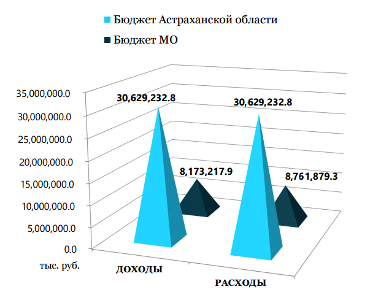
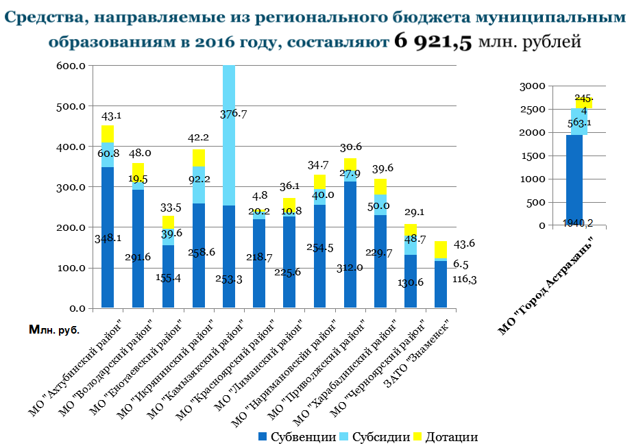

Сколько составляет размер бюджета
В 2015 году бюджет Астраханской области составляет 35 472,3 млн. рублей при расходах в 38 236,9 млн. рублей
В 2016 году планируется 41 408,3 млн. рублей при расходах в 36 910,6 млн. рублей
А в 2017 году бюджет должен достигнуть отметки в 40 743,3 млн. рублей при расходах в 35 836,9 млн. рублей.
В каком состоянии бюджет

Доход на 2015 год составляет 43568,2 млн. руб., из них 8095,9 млн. руб. бюджет Муниципальных образований (МО), а 35472,3 млн. руб. бюджет области.
Расходы 46 619,1 млн. руб., из них 8382,1 млн. руб. бюджет МО, а 38236,9 млн. руб. бюджет области.
Из этих цифр можно сделать вывод, что на данный момент наша область испытывает дефицит бюджета, но двигаясь по заданному курсу к 2017 году доходы АО превысят расходы на 5 млн. рублей.
Какие районы и в каком количестве получают областной бюджет?
